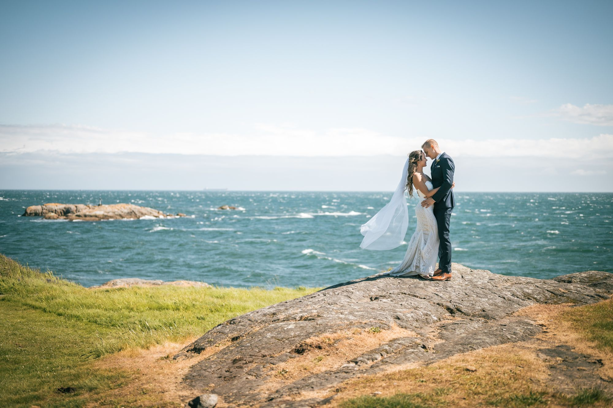

There's no single "perfect" wedding season in British Columbia — that's the beauty of it. Each time of year offers something entirely different for photography, and the right choice depends entirely on what aesthetic and experience you're after.

Spring (April – June): The Awakening
Spring on Vancouver Island is a photographer's secret. The cherry blossoms arrive in late March through April, creating clouds of pale pink across downtown Victoria and the Saanich Peninsula. Rhododendrons bloom in May. The light is softer and more diffused than in summer, which means images have a gentle, editorial quality rather than the punchy contrast of peak summer.
The trade-off is unpredictability. Spring weddings can experience 22°C sunshine or 8°C rain in the same week. This isn't a problem — it just means having a thoughtful indoor backup plan and trusting your photographer to work with whatever the day delivers.


Summer (July – August): The Golden Standard
For most couples, summer is the default choice — and for good reason. Long days mean golden hour stretches from roughly 8:30pm until past 9pm in July. Outdoor ceremonies and waterfront portraits are at their most reliable. The colour palette is rich: deep greens, blue skies, vibrant florals.
The challenge with summer is that it's also peak booking season, meaning venues and photographers are most expensive and least available. If summer is your priority, booking 18 months in advance is not unusual in Victoria.


Early Fall (September – October): The Sweet Spot
If I could recommend one window for a Vancouver Island wedding, it would be late September. Here's why: the summer crowds have thinned, the light takes on a honeyed quality, and the maple trees begin their shift from green to amber. September temperatures hover around 16–20°C — warm enough for outdoor celebrations, cool enough for suit comfort. The ocean is still warm enough for waterfront shoots.
October is more of a gamble. Storm systems arrive more regularly, and the light can be moody and grey — beautiful if that's your aesthetic, less ideal if you were counting on bright garden imagery.


Late Fall & Winter (November – February): The Underrated Choice
Winter weddings in Victoria are genuinely magical. The city is decorated for Christmas, the light is soft and even (no harsh midday sun), and hotel rates are at their lowest. A January wedding in downtown Victoria with candlelight and a blush florals palette reads like something from a European editorial shoot.
The limitation is daylight — sunset comes early, around 4:30pm in December. This compresses the timeline for portraits and means working with more indoor and artificial light. But for couples who embrace this rather than fight it, winter produces some of the most intimate, atmospheric imagery of the year.


What This Means for Your Photography
Each season has a distinct visual language. Spring = delicate and romantic. Summer = vibrant and sun-drenched. Fall = warm and editorial. Winter = intimate and atmospheric. There's no wrong answer — there's only the answer that's right for you.
My job is to understand what season you've chosen and to extract the maximum beauty from whatever it offers. Every season on Vancouver Island has something extraordinary in it — we just have to know where to look.
Not sure which season is right for your vision? Let's talk it through — I'm always happy to help couples think through the timing that will serve their photos best.